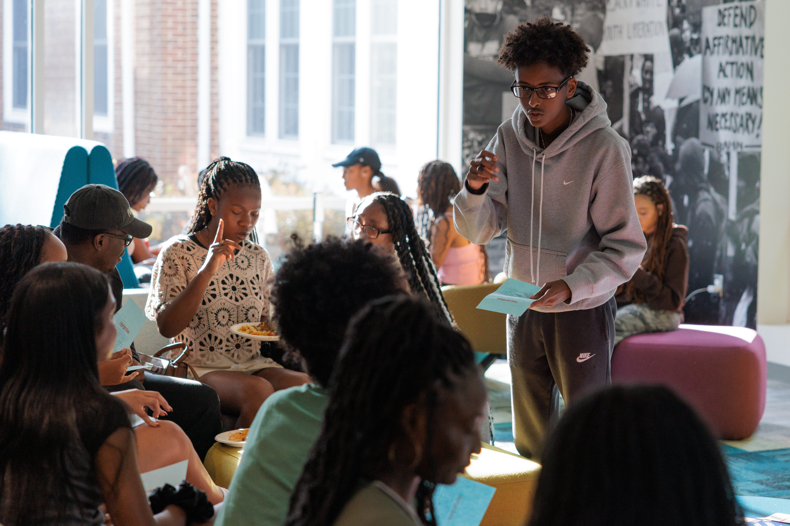
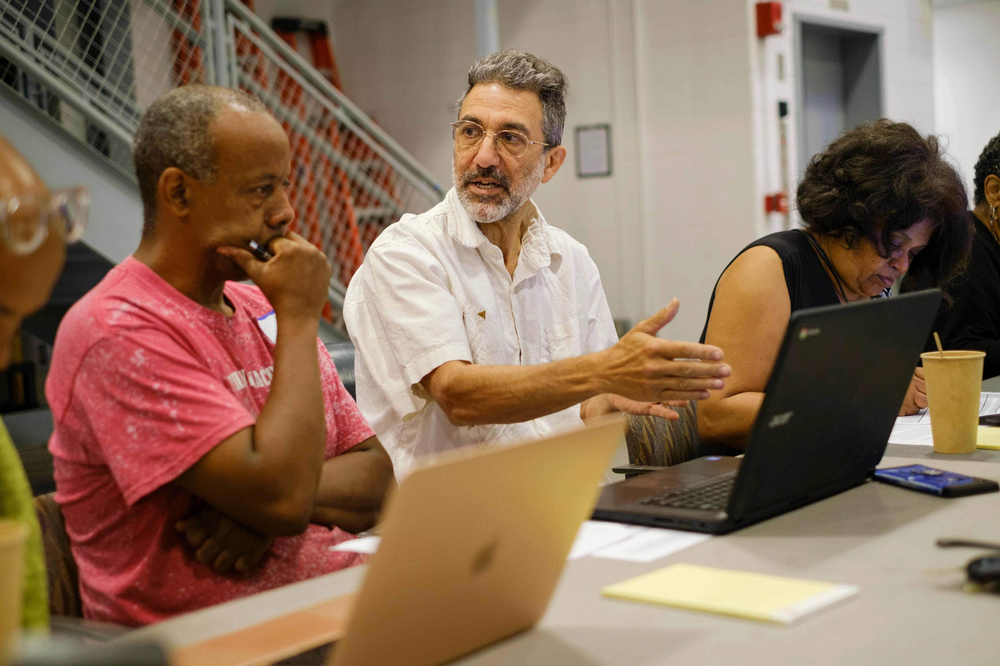

From Preparation to Partnership
You have reflected on your goals, learned about your partner, and assessed your team's readiness. Now the work becomes shared. The first few weeks of an engaged learning experience set the tone for everything that follows. This is when you establish relationships, agree on how you will work together, and turn a general project idea into a concrete, mutually understood plan.
Rushing this stage is one of the most common reasons projects struggle later. Teams that invest early in clear roles, honest expectations, and reliable communication spend far less time recovering from misunderstandings down the line.
Establishing Relationships
A strong working relationship with your partner and your teammates is the foundation of a successful project. Relationships built on trust and clear communication make it easier to navigate the challenges that inevitably come up during real-world work.

With Your Partner
- Schedule an introductory meeting to learn about the partner's mission, context, and what a successful outcome looks like to them.
- Listen more than you present. Your partner understands their organization and community in ways you do not yet.
- Ask how the partner prefers to communicate and how often they want updates.
- Clarify who your main point of contact is and who has decision-making authority.
With Your Team
- Take time to learn each teammate's strengths, interests, working styles, and learning goals.
- Discuss how the team will make decisions and handle disagreement before conflict arises.
- Acknowledge that different team members may have different availability and commitments.
Defining Roles and Responsibilities
Ambiguity about who is responsible for what is a frequent source of friction. Defining roles early does not mean locking people into rigid boxes; it means making sure that every essential task has a clear owner and that expectations are shared.
Questions to Answer Together
- Who is the project manager or main coordinator for the team?
- Who is responsible for communicating with the partner?
- How will work be divided, and how will the team track who is doing what?
- What happens if someone cannot meet a commitment?
- How will the team share knowledge so no single person becomes a bottleneck?
Setting Expectations
Explicit expectations protect both the project and the relationships behind it. Agreeing on standards at the start gives everyone a shared reference point to return to when questions come up.
- Scope: Confirm what the project will and will not include, so the work stays realistic within your timeline.
- Deliverables: Agree on what the team will produce, in what format, and by when.
- Quality: Discuss what "good enough" and "excellent" look like for this partner and this context.
- Availability: Share calendars, deadlines, exam periods, and other commitments that affect the team's capacity.
- Boundaries: Be honest about what your team can responsibly commit to as students with limited time.
Developing a Team and Project Plan
A project plan translates a shared understanding into a sequence of actions. It does not need to be elaborate, but it should be written down and visible to everyone so the team can coordinate and adjust as the work evolves.

A Simple Starting Plan Includes
- Goals: What the project is trying to achieve for the partner and what the team wants to learn.
- Milestones: The major checkpoints between now and the final deliverable.
- Tasks: The concrete steps needed to reach each milestone, with owners and rough due dates.
- Risks: The things most likely to slow the team down, and how you will respond if they happen.
- Check-ins: When and how the team and the partner will review progress together.
Establishing Communication Practices
Reliable communication is what keeps a distributed team and a busy partner aligned. Deciding on your practices early prevents small gaps from turning into large misunderstandings.
- Channels: Choose where the team communicates day to day and where you communicate with the partner.
- Cadence: Set a regular meeting rhythm for the team and a predictable update schedule for the partner.
- Documentation: Keep shared notes and decisions in one place everyone can access.
- Response norms: Agree on how quickly people will reply and how to flag something urgent.
Featured Starting Resources
These tools can help your team move from preparation into a well-organized launch.